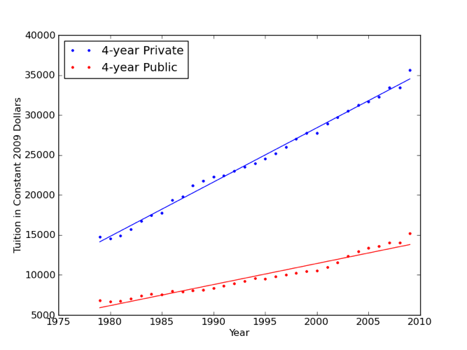
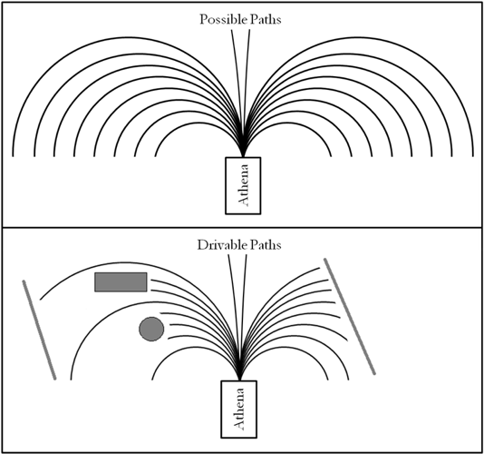
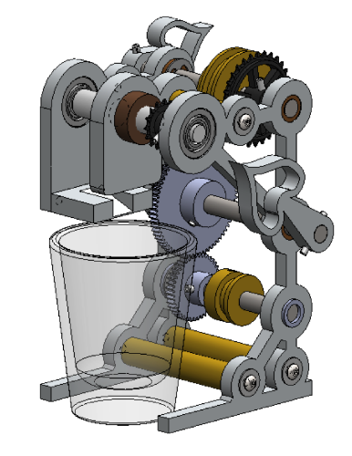

2010
| High Dynamic Range Imaging Sensor | Nov 2010 - Dec 2010 (tested Aug 2011) |
For the final project of my Mixed Analog and Digital VLSI course, a classmate and I created a high dynamic range CMOS imaging sensor. The 4 kilopixel imager uses a novel active pixel sensor (APS) design based on previous work by Hsiu-Yu Cheng et al. at the University of Oxford. The pixels have an adjustable response which allows each pixel to have a unique shutter time based on the light intensity. The tiny chip unit was fabricated by MOSIS using ON SEMI 0.5-micron technology (17.4x17.4 micron pixels). Initial testing revealed the sensor to work as expected.

layout of 4 kilopixel imager
|
|
layout of pixels and dynamic decoder |
close-up of manufactured sensor |
|
full, manufactured imaging sensor |
results from pixel simulation |
| Sean Shi, Dr. Bradley Minch (faculty) |
| presentation |
| circuits, mixed analog and digital VLSI, active pixel sensor, Cadence design tools, SPICE simulation, layout, Olin College |
| iPhone Testing System | Jan 2010 - Dec 2010 |
I collaborated with the iPhone Product Design team to develop a novel testing system as part of the Olin Senior Capstone Program in Engineering (SCOPE). Specifics cannot be revealed under the non-disclosure agreement.
|
Apple confidential |
| Eli Sheldon, Michael Lintz, Jayesh Gorasia, Edward Byun, Ryan Harris, Daniel Greeley, Ananya Kejriwal |
| testing, iPhone Product Design, SCOPE, Olin College, Apple Inc. |
| Reconfigurable Rescue Robot | Nov 2010 - Dec 2010 |
As a project in my Systems class, we designed a self-reconfigurable modular robot for use in rescue and reconnaissance scenarios. The robot featured a variety of configurations suited to specific environments or missions. The system is also extensible, allowing new modules to be added as robotic technology advances. The final design was presented to DARPA program managers and leaders in the field of robotics.

centipede configuration |
rolling configuration |
|
"spider" configuration |
snake configuration |
| David Gardner, Helen Oleynikova, Lorraine Weis, Arash Ushani, Velin Dimitrov |
| presentation |
| robotics, rescue & reconnaissance, adaptive morphology, self-reconfigurable, modular, emergent technologies, DARPA |
| Educational Toy Design | Dec 2010 |
I worked briefly with a professor to design and render a set of interactive engineering toys that interface with mobile computing devices.
|
scientific toys and tablet being used outside |
| Dr. Mark Chang (faculty) |
| rendering, design, SolidWorks, educational toys |
| da Vinci Toys Startup | Oct 2010 - Nov 2010 |
I co-founded a company creating educational engineering kits as part of my Foundations of Business and Entrepreneurship class. I designed a product line, sourced materials, created marketing materials, sold products, and hosted promotional events. The company earned over $3500 in revenue during its two-week selling period.
|
company logo |
|
aerospace engineering kit |
electrical engineering & renewable energy kit |
|
civil engineering kit |
| Claire McLeod, Thomas Pandolfo, Jackie Rose |
| startup business, marketing, product design, education, Olin College |
| Investigation of College Tuition Prices | Oct 2010 |
As a small project for my Probability and Statistics class, I investigated increasing college tuition prices. While more an example of different computational methods used for statistics than an in-depth study, it was interesting to observe how education has gotten more expensive over the years.
|

long term trends |
PMF of 2009 tuition change (private colleges in blue, public in red) |
| draft report |
| college tuition, probability and statistics, Olin College |
| Microsoft Dynamics Feature Design | Jun 2010 - Aug 2010 |
During the summer of 2010 I worked as a Program Manager at Microsoft. While there, I designed an interactive portal experience for partner organizations building ERP solutions using Microsoft Dynamics Online services. I researched users to develop personas, collaborated with my team to refine designs, and wrote specifications to guide implementation.

Microsoft confidential |
| Microsoft Dynamics Online Services team |
| online services, enterprise resource planning (ERP), software design, personas, project management, Microsoft |
| Intelligent Ground Vehicle Competition | Apr 2010 - Jun 2010 |
Improving on our 2009 autonomous vehicle, we made numerous hardware and software changes to increase the robot's ability to navigate and avoid obstacles. In particular, the use of a field-programmable gate array (FPGA) enabled significant improvements in the reaction time. We place third out of around fifty teams in the Design Competition at the 2010 International Ground Vehicle Competition (IGVC) in Detroit.
|
Athena, the 2010 Olin IGVC entry |
updated electronics enclosure |

path planning |
|
image processing example |
| Nicholas Hobbs, Daniel Grieneisen, Jacob Izraelivitz, Gray Thomas, Jessica Noglows, Eric Kolker, Lucas Hill |
| 2nd in Design Competition at International Ground Vehicle Competition in Detroit, MI ($1000) |
| design report |
| intelligent vehicles, robotics, computer vision, algorithms, system integration, Olin College |
| Rail-to-Rail Differential Amplifier | May 2010 |
As a mini project at the end of my Microelectronics Circuits class, I designed and simulated a rail-to-rail CMOS differential amplifier.
|
circuit schematic |
| brief report |
| analog circuit design, SPICE simulation, rail-to-rail differential amplifier, Olin College |
| Miniature Juicer | Apr 2010 |
As an exercise in precision machining and simple transmission design for a Mechanical Prototyping course, several classmates and I built a miniature grape juicer. While not particularly useful, it was an instructive project and the juicer remains a small work of engineering art.
|

engineering model of juicer |
|
final, assembled juicer |
back side of juicer |
top view |
| Leah Mendelson, Abe Feldman, and others |
| draft report |
| precision machining, mechanical design, engineering drawings, SolidWorks, Olin College |
| Biomimetic Swimmers | Feb 2010 - Apr 2010 |
In my Mechanical Prototyping course, I worked on several teams throughout the semester to learn rapid prototyping techniques for manufacturing. Over four week sprints we designed and assembled biomemetic swimmer models. My teams built a motorized flying fish out of sheet metal and a 3D-printed, motorized dolphin.

engineering model of motorized dolphin |
|
SolidWorks model of motorized flying fish |
|
final, assembled dolphin |
final, assembled flying fish |
| Neil Paulson and others |
| draft fish report, draft dolphin report |
| mechanical prototyping, SolidWorks, design, robotics, sheet metal, 3D printing, mechanical drawings, Olin College |